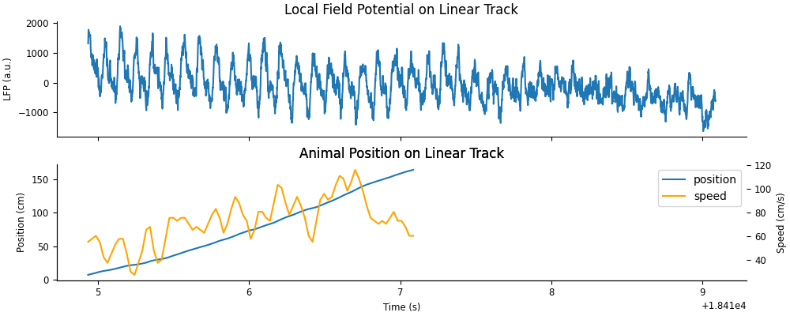
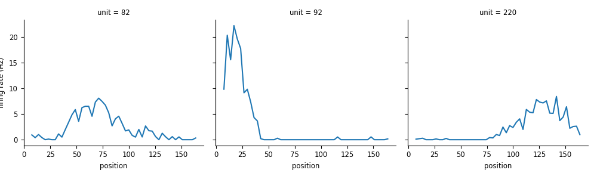
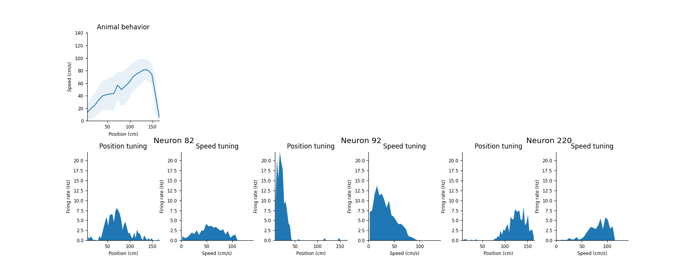
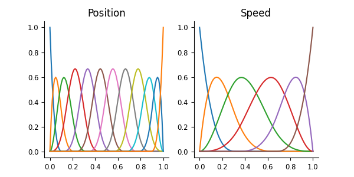
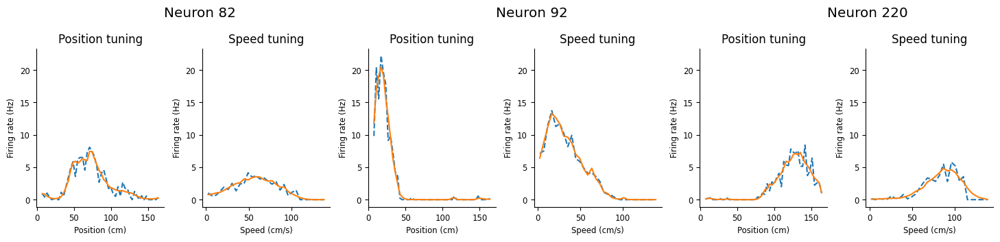

Download
This notebook can be downloaded as 02_01_place_cells_1d_neural_tuning-users.ipynb. See the button at the top right to download as markdown or pdf.
Data wrangling, 1D neural tuning, and model fitting#
This notebook has had all its explanatory text removed and has not been run. It is intended to be downloaded and run locally (or on the provided binder), working through the questions with your small group.
In this series of notebooks, we will review more advanced applications of pynapple; tuning curves, signal processing, and decoding; as well as fitting GLMs to the data using NeMoS. We’ll apply these methods to demonstrate and visualize some well-known physiological properties of hippocampal activity, specifically phase presession of place cells and sequential coordination of place cell activity during theta oscillations.
This series is split into 4 notebooks:
(This notebook) Data wrangling, 1D neural tuning, and model fitting
Signal processing
2D neural tuning and model fitting
Neural decoding
You should start by completing this first notebook. Afterwards, you can choose any notebook that looks most interesting to you!
import workshop_utils
# imports
import math
import os
import matplotlib.pyplot as plt
import numpy as np
import pandas as pd
import requests
import scipy as sp
import seaborn as sns
import tqdm
import pynapple as nap
# necessary for animation
import nemos as nmo
plt.style.use(nmo.styles.plot_style)
# configure pynapple to ignore conversion warning
nap.nap_config.suppress_conversion_warnings = True
Part 1: Data wrangling#
Fetching the data#
The data set we’ll use is from the study Diversity in neural firing dynamics supports both rigid and learned hippocampal sequences. In this study, the authors collected electrophisiology data from layer CA1 of hippocampus in rats. In each recording session, data were collected while the rats explored a novel environment (a linear or circular track), as well as during sleep before and after exploration. In our following analyses, we’ll focus on the exploration period of a single rat and recording session.
The full dataset for this study can be accessed on DANDI and a smaller file containing only the session and data of interest can be found at OSF. Both datasets are saved as NWB files.
# fetch file path
path = workshop_utils.fetch_data("Achilles_10252013_EEG.nwb")
# load data with pynapple
data = nap.load_file(path)
print(data)
This gives us a dictionary of pynapple objects that have been extracted from the NWB file. Let’s explore each of these objects.
Note
We will ignore the object theta_phase because we will be computing this ourselves in a separate notebook.
units#
The units field is a TsGroup, where each unit has the following metadata:
rate: computed by pynapple, is the average firing rate of the neuron across all recorded time points.
location, shank, and cell_type: variables saved and imported from the original data set.
data["units"]
rem, nrem, and forward_ep#
The next three objects; rem, nrem, and forward_ep; are all IntervalSet objects containing time windows of REM sleep, nREM sleep, and forward runs down the linear maze, respectively.
data["rem"]
data["nrem"]
data["forward_ep"]
The following plot demonstrates how each of these labelled epochs are organized across the session.
t_start = data["nrem"].start[0]
fig,ax = plt.subplots(figsize=(10,2), constrained_layout=True)
sp1 = [ax.axvspan((iset.start[0]-t_start)/60, (iset.end[0]-t_start)/60, color="blue", alpha=0.1) for iset in data["rem"]];
sp2 = [ax.axvspan((iset.start[0]-t_start)/60, (iset.end[0]-t_start)/60, color="green", alpha=0.1) for iset in data["nrem"]];
sp3 = [ax.axvspan((iset.start[0]-t_start)/60, (iset.end[0]-t_start)/60, color="red", alpha=0.1) for iset in data["forward_ep"]];
ax.set(xlabel="Time within session (minutes)", title="Labelled time intervals across session", yticks=[])
ax.legend([sp1[0],sp2[0],sp3[0]], ["REM sleep","nREM sleep","forward runs"]);
eeg#
The eeg object is a TsdFrame containing an LFP voltage trace for a single representative channel in CA1.
data["eeg"]
Despite having a single column, this TsdFrame is still a 2D object. We can represent this as a 1D Tsd by indexing into the first column.
data["eeg"][:,0]
position#
The final object, position, is a Tsd containing the linearized position of the animal, in centimeters, recorded during the exploration window.
data["position"]
Positions that are not defined, i.e. when the animal is at rest, are filled with NaN.
This object additionally contains a time_support attribute, which gives the time interval during which positions are recorded (including points recorded as NaN).
data["position"].time_support
Let’s visualize the first 300 seconds of position data and overlay forward_ep intervals.
pos_start = data["position"].time_support.start[0]
fig, ax = plt.subplots(figsize=(10,3))
l1 = ax.plot(data["position"])
l2 = [ax.axvspan(iset.start[0], iset.end[0], color="red", alpha=0.1) for iset in data["forward_ep"]];
ax.set(xlim=[pos_start,pos_start+300], ylabel="Position (cm)", xlabel="Time (s)", title="Tracked position along linear maze")
ax.legend([l1[0], l2[0]], ["animal position", "forward run epochs"])
We’ll save out the following variables that we’ll need throughout the notebook.
position = data["position"]
lfp = data["eeg"][:,0]
spikes = data["units"]
forward_ep = data["forward_ep"]
Restricting the data, computing speed, and visualization#
For the following exercises, we’ll only focus on periods labeled as forward runs aloong the linear track. We can extract this information using the interval set forward_ep.
1. Restrict position to forward_ep and confirm that there are no nan values in the restricted data set.#
# restrict position and check for nans
position =
We also want the speed of the animal during forward runs. We can get this using the pynapple object method derivative. This function accounts for discontinuous intervals either in the time support, or by providing the optional argument ep, the intervals over which you want to compute the derivative.
2. Calculate velocity using the derivative method on position during forward runs.#
NOTE:
derivativereturns velocity. Usenp.absto convert the velocity into speed.
# calculate speed
speed =
To get a sense of what the LFP looks like while the animal runs down the linear track, we can plot each variable; lfp, position, and speed; side-by-side. Let’s do this for an example run; specifically, we’ll look at forward run 9.
3. Create an interval set for forward run index 9, adding 2 seconds to the end of the interval. Restrict lfp and position to this epoch.#
ex_ep =
ex_lfp =
ex_position =
ex_speed =
Let’s plot the example LFP trace and animal position and speed. Plotting Tsd objects will automatically put time on the x-axis.
fig, axs = plt.subplots(2, 1, constrained_layout=True, figsize=(10, 4), sharex=True)
# plot LFP
axs[0].plot(ex_lfp)
axs[0].set_title("Local Field Potential on Linear Track")
axs[0].set_ylabel("LFP (a.u.)")
# plot animal's position
l1, = axs[1].plot(ex_position)
axs[1].set_title("Animal Position on Linear Track")
axs[1].set_ylabel("Position (cm)")
axs[1].set_xlabel("Time (s)");
# plot animal's speed
ax = axs[1].twinx()
l2, = ax.plot(ex_speed, c="orange")
ax.set_title("Animal Position on Linear Track")
ax.set_ylabel("Speed (cm/s)")
axs[1].legend([l1,l2], ["position","speed"])
Figure check

There is a strong theta oscillation dominating the LFP while the animal runs down the track; this oscillation is weaker after the run is complete.
Part 2: 1D neural tuning and model fitting#
Computing 1D tuning curves: place fields#
Next, we’ll compute place selectivity of each unit. We can find place firing preferences of each unit by using the function nap.compute_tuning_curves.
We’ll filter for units that fire at least 1 Hz and at most 10 Hz when the animal is running forward along the linear track. This will select for units that are active during our window of interest and eliminate putative interneurons (i.e. fast-firing inhibitory neurons that don’t usually have place selectivity). Afterwards, we’ll compute the tuning curves for these sub-selected units over position.
4. Restrict spikes to forward_ep and select for units whose rate is at least 1 Hz and at most 10 Hz#
# save the filtered spikes in the following variable
good_spikes =
5. Compute tuning curves with respect to position for units in good_spikes.#
Use 50 position bins
Name the feature
"position"using the optional argumentfeature_names
place_fields =
This function returns tuning curves as an xarray.DataArray, with coordinates for unit (first dimension) and position (second dimension). An xarray.DataArray object provides convenient tools for plotting and other manipulations, and it scales well for tuning curves with more than 1 feature.
Tip
The reason nap.compute_tuning_curves returns a xarray.DataArray and not a Pynapple object is because the array elements no longer correspond to time, which Pynapple objects require.
We can use the xarray.DataArray plot method to easily plot each unit, focusing on three example units.
neurons = [82, 92, 220]
p = place_fields.sel(unit=neurons).plot(x="position", col="unit")
p.set_ylabels("firing rate (Hz)")
Figure check

We can see clear spatial selectivity in these example units, where firing rate peaks at specific positions along the track.
Let’s repeat this exercise, but instead compute tuning curves as a function of speed instead of position.
6. Compute tuning curves with respect to speed for units in good_spikes.#
Use 30 speed bins
Name the feature
"speed"using the optional argumentfeature_names
speed_fields =
Let’s compare the position tuning with the speed tuning of select neurons.
fig = workshop_utils.plot_position_speed(position, speed, place_fields.sel(unit=neurons), speed_fields.sel(unit=neurons), neurons);
Figure check

In these example units, and we see that the speed and position tuning are highly correlated. How can we disentangle which variable is responsible for driving neural activity? This is where NeMoS comes in handy: GLMs can help us model responses to multiple, potentially correlated predictors.
Estimating tuning curves using a population GLM#
The goal of the remaining exercises in this section is to fit a PopulationGLM including both position and speed as predictors, and check if this model accurately captures the tuning curves of the neurons.
7. Compute observations by counting spikes, using the pynapple method count, on our TsGroup of spike times, good_spikes.#
For speed later on, only compute
counton our example units by indexinggood_spikeswithneuronsUse a
bin_sizeof 10 ms (0.01s)Pass
forward_epas the optional argumentepto make sure we’re only counting during forward runs.
bin_size =
counts =
By using this bin size for spike counts, counts will have a much higher sampling rate, and therefore have more data points, than our features, position and speed. We need to upsample our features to match the number of time points in counts in order to create a design matrix of the correct size to fit the model. We can achieve this by using the pynapple object method interpolate. This method will linearly interpolate new position and speed samples between existing samples at timestamps given by another pynapple object, in our case by counts.
8. Upsample position and speed using the pynapple method interpolate with the time stamps from counts.#
up_position =
up_speed =
9. Instantiate the basis by doing the following:#
Create a separate basis object for each model input (speed and position).
Use
BSplineEvalbasis with, using 12 basis functions for position and 6 basis functions for speed.Provide a label for each basis (“position” and “speed”).
We’ll use a helper function to visualize the resulting basis functions.
position_basis =
speed_basis =
workshop_utils.plot_pos_speed_bases(position_basis, speed_basis)
Figure check

However, now we have an issue: in all our previous examples, we had a single basis object, which took a single input to produce a single array which we then passed to the GLM object as the design matrix. What do we do when we have multiple basis objects?
To do this, we can use NeMoS basis composition, where you can add the two bases together and obtain a new additive basis. We can similarly call compute_features on this additive basis, passing both position and speed, to obtain the same design matrix. For people familiar with NumPy, this is equivalent to calling basis.compute_features() for each basis separately and then concatenate the outputs.
10. Create an additive basis by adding together position_basis and speed_basis.#
additive_basis =
11. Create a design matrix by passing up_position and up_speed to the basis method compute_features#
Make sure the features are passed in the same order that the basis objects were added together!
X =
Notice that, since we passed pynapple objects to the basis object, we got a pynapple object back, preserving the time stamps. Additionally, X has the same number of time points as our input position and speed, but 18 columns. The columns come from n_basis_funcs from each basis (12 for position, 6 for speed).
As we’ve done before, we can now use the Poisson GLM from NeMoS to learn the combined model.
12. Fit a GLM by doing the following:#
Initialize
PopulationGLMUse the “LBFGS” solver and pass
{"tol": 1e-12}tosolver_kwargs.Fit the data, passing the design matrix
Xand spike countscountsto the glm object.
# define the model
glm =
# fit
glm.fit(
Let’s check first if our model can accurately predict the tuning curves we displayed above. We can use the predict function of NeMoS and then compute new tuning curves using pynapple.
13. Use predict to calculated the predicted firing rate of our model. Use the predicted rate to compute predicted tuning curves using nap.compute_tuning_curves.#
Remember to convert the predicted firing rate to spikes per second!
Use 50 bins for position tuning curves and 30 bins for speed tuning curves.
# predict the model's firing rate
predicted_rate =
# compute the position and speed tuning curves using the predicted firing rate.
glm_tuning_pos =
glm_tuning_speed =
We can plot the results to compare the model and data tuning curves.
fig = workshop_utils.plot_position_speed_tuning(place_fields.sel(unit=neurons), speed_fields.sel(unit=neurons), glm_tuning_pos, glm_tuning_speed);
Figure check

We can see that this model does a good job capturing both the position and the speed.